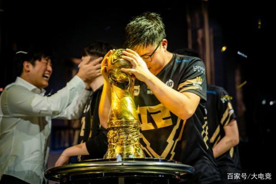

相信很多最近关注LOL电竞圈的人都知道，UZI–永远滴神，他退役了。相信很多人跟我一样，觉得很不舍，也会觉得很突然，不可思议。我相信没有人会觉得他会就这样退役了，因为我跟很多人的同胞一样，希望他夏季赛的回归，然后再次打进世界赛。

对于Uzi的印象挺多的，比如说是那个绕后VN，英文解说高喊：“He still alive！”，两届S赛的亚军,S8MSI的卡萨等等。在央视对Uzi的采访中，Uzi说了，他自己最满意的还是那个vn首个五杀。说实话，我看了影片之后才发现，那个vn是真的厉害，也是真的让人心动。更多的情况大家可以点击这里查看视频。在这里我主要谈的是我自己的感悟。
得到的不是最珍贵的，失去的才是最珍贵的
就像娃娃说那样：“无论你现在怎么评价Uzi，等到他真的退役的时候，大家都会对他有敬意。”，在我的印象里，就算他是拿了两届世界赛的亚军，其实他在我心中地位也没有那么的高，我也曾经跟很多喷子一样，对Uzi独揽经济，但是最后因为自己操作而输掉比赛的做法感到恶心。但是，只要用心的看了今年的LPL的春季赛之后，我才知道，其实Uzi他真的很厉害，就像某个人评论的一样，“Uzi把RNG抬到了一个本不属于他的层次，仅仅是因为Uzi。”，其实回过头来看，Uzi确实是厉害，打了八年的职业比赛，比赛水准一直没有下降反而提升，放眼看去这么多年，没有一个职业选手能做到跟Uzi一样的热爱这款游戏，他是想赢的，赢了一次下次还想赢得人。即使这样的一个人，网络上不乏有人对他重拳出击，这让我想起了一句话：“你不可能是人民币，可以做到每个人都喜欢”,真到了Uzi退役的时候，你都会感慨，一代英雄也会陨落，他真的身上有很多的病，这是连他队友都不知道的病，坚持到了现在，坚持不下去了还是因为伤病而无法上场而感到的遗憾，我是真的为他感到惋惜，也为自己感到可悲，因为我做到Uzi这样的坚韧。以前我可能会想，不就是打游戏嘛，要是给我这样玩，我也是能够坚持的，事实上让我一直玩十几个小时都顶不住，那还谈什么水平达到Uzi这样的高度？

人生难免会有遗憾
对于Uzi的遗憾来说，那就是明明自己还能打，水平并没有下降，但是身体不允许他继续这样高强度的训练下去了。他的退役是有遗憾的，遗憾在于并没有拿到S赛的冠军来证明自己，虽然他并不需要，但是他不得不需要。对于我自己来说，遗憾是有的，但是我比较的差劲，Uzi虽然是抱着遗憾的离开了赛场，但是人家在经济上是完全没有问题的生活下去，就算再怎么差劲，也可以靠着自己的粉丝群体开直播赚钱的。但是我不行，我甚至是一个连工作都没有的人，连养活自己都成问题，所以现在的我有什么理由可以这样消沉下去呢？有时候我会抱怨，明明自己回答到了别人面试官提出的问题，而最后却没有得到别人offer，可能是因为2020的疫情造成了他们更需要的是能干活的人，他是他们觉得我是不能干的，而实际上我是能干的。但是现在的我不会这么想了，为什么呢？其实很简单，没有offer说明你根本就没有这个资格去说你能怎么样怎么样，这更像是发恼骚，没有能力者的恼骚。对于我来说遗憾很多，高中的遗憾，大学的遗憾，毕业后现在找工作的遗憾，可笑的是这些所谓的遗憾、后悔却是自己造成的，不论是学习还是生活，我虽然鼓足干劲却没有用尽全力，我虽然精神先进却行动落后，然而这些思想的先进，鼓足的干劲却让我自己没有记住你的行动落后，你的懒惰！
最后
总的来说，这是一篇瞎写的文章，不过是自己从Uzi退役这件事中对自己的思考而已，当然仅仅是思考并不会对自己的进步有多大的改变，让我有行动去写这篇文章的，恰恰是因为我比较喜欢的一个Up主泛式最近发布的一个视频，他所给我的一个理念是，自由职业其实是跟需要自制力和把握时间的能力，你可以在保证生活的同时挤出时间来做自己喜欢做的事情，其实跟我出去工作的最大区别就是，没事干的时候你只能在公司发呆，但是自由职业可以干自己想干的事情。我希望跟与君共勉，加油!!!!!